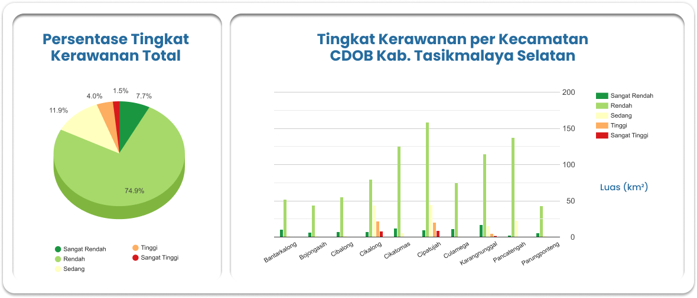

Peta Tingkat Kerawanan
Bencana Tsunami
Calon Daerah Otonomi Baru (CDOB)
Kabupaten Tasikmalaya
Selatan

Tentang
Kabupaten Tasikmalaya Selatan merupakan salah satu calon daerah otonomi baru yang akan dimekarkan dari Kabupaten Tasikmalaya, Provinsi Jawa Barat. Kabupaten ini direncakan memiliki 10 kecamatan dengan pusat pemerintahan berada di Kecamatan Karangnunggal. Sebagai calon daerah otonom baru yang berada di pesisir selatan Pulau Jawa dan berdekatan dengan zona subduksi antara lempeng Indo-Australia dan lempeng Eurasia, wilayah ini memiliki tantangan tersendiri dalam konteks mitigasi bencana terutama gempa bumi dan tsunami. Salah satu solusi dalam menghadapi tantangan tersebut adalah Pengembangan peta tingkat kerawanan bencana tsunami berbasis WebGIS. Dengan menggunakan WebGIS, diharapkan masyarakat dapat dengan mudah mengetahui informasi terkait zona tingkat kerawanan bencana tsunami, lokasi berbahaya, dan lokasi aman di wilayah tersebut. Adanya WebGIS peta tingkat kerawanan tsunami juga diharapkan dapat menjadi referensi penting dalam perencanaan tata ruang dan strategi evakuasi yang lebih baik, sehingga dapat meminimalisir risiko dan dampak dari bencana tsunami.

Data/Parameter
Kemiringan Lereng
Semakin landai kemiringan lereng, tingkat kerentanan tsunami akan
semakin tinggi. Bobot parameter ini adalah 25%.
Elevasi Permukaan
Semakin rendah elevasi dari permukaan laut, tingkat kerentanan
tsunami akan semakin rendah. Bobot parameter ini adalah 30%.
Jarak dari Garis Pantai
Semakin dekat dari garis pantai, tingkat kerentanan tsunami
akan
semakin tinggi. Bobot parameter ini adalah 30%.
Jarak dari Sungai
Semakin dekat dari sungai, tingkat kerentanan tsunami akan semakin
tinggi. Bobot parameter ini adalah 15%.
Statistik
Tentang Saya
Syifa Us Sudur
22/496734/SV/20995
Mini Project UAS Praktikum SIG Berbasis Web
Teknologi Survei dan Pemetaan Dasar
Departemen Teknologi Kebumian
Sekolah Vokasi, Universitas Gadjah Mada
Copyright @2024 by Syifa Us Sudur